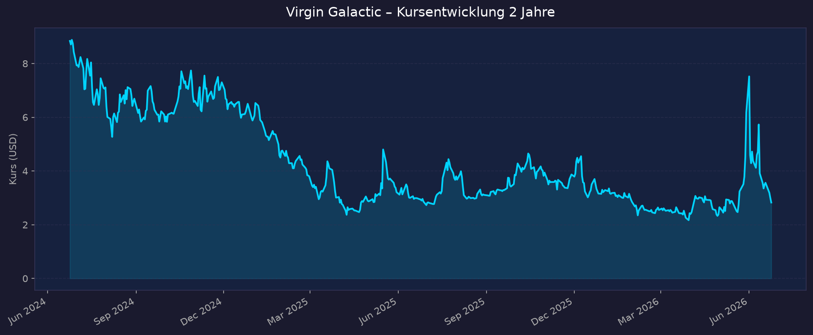
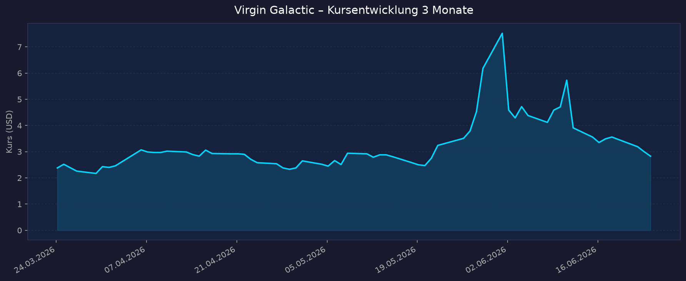

📈 1. Kursentwicklung
Aktueller Kurs: 2,83 USD | Veränderung heute: ca. +0,2 % (Tagesspanne 3,29–3,58 USD laut Intraday-Quelle, Schlussdaten yfinance 2,83 USD)
Hinweis: Die Kursquellen weichen am 24.06.2026 leicht ab (yfinance-Schlusskurs 2,83 USD; stockanalysis.com 2,83 USD; eine Intraday-Quelle nennt 3,49 USD). Verwendet wird durchgängig der yfinance/stockanalysis-Wert von 2,83 USD.
Chart – 2 Jahre

Chart – 3 Monate

| Zeitraum | Kurs Start | Kurs Ende | Veränderung |
|---|---|---|---|
| 2 Jahre | 8,84 USD | 2,83 USD | −68 % |
| 3 Monate | 2,38 USD | 2,83 USD | +19 % |
| 52-Wochen-Hoch | — | ca. 8,90 USD | — |
| 52-Wochen-Tief | — | ca. 2,13 USD | — |
Einordnung: Klassischer Abwärtstrend über 2 Jahre (−68 %), überlagert von extremer kurzfristiger Volatilität. Anfang Juni 2026 schoss der Kurs durch WallStreetBets-/Meme-Hype von ~4,53 USD (28.05.) auf 7,52 USD (01.06.) und brach dann auf ~3,17 USD (22.06.) ein. Die 2-Jahres-Kurve ist zudem durch den 1-für-20-Reverse-Split (Juni 2024) und nachfolgende massive Verwässerung verzerrt.
💹 2. KGV-Entwicklung (Kurs-Gewinn-Verhältnis)
Aktuelles KGV: n/a — defizitär
| Zeitraum | KGV | Einordnung |
|---|---|---|
| Aktuell | n/a — defizitär | Nettoverlust FY2025 −279 Mio. USD |
| vor 3 Monaten | n/a — defizitär | durchgehend defizitär |
| vor 6 Monaten | n/a — defizitär | — |
| vor 12 Monaten | n/a — defizitär | — |
| vor 24 Monaten | n/a — defizitär | — |
Bewertung: Ein KGV ist nicht aussagekräftig, da Virgin Galactic seit Bestehen tief defizitär ist und sich faktisch in einer Pre-Revenue-Phase befindet (kommerzielle Flüge seit Mitte 2024 zwecks Delta-Entwicklung pausiert). Für die Bewertung sind P/S, Cash-Burn/Runway und Verwässerung maßgeblich (siehe unten).
💰 3. Sales Multiple (Kurs-Umsatz-Verhältnis / P/S)
Aktuelles P/S-Verhältnis: ca. 239 (stockanalysis.com, TTM-Umsatz ~1,66 Mio. USD) | EV/Sales: ca. 353
| Zeitraum | P/S Ratio | Einordnung |
|---|---|---|
| Aktuell | ca. 239 | extrem hoch — Umsatzbasis quasi null |
| vor 3 Monaten | nicht verfügbar (Größenordnung dreistellig) | — |
| vor 12 Monaten | nicht verfügbar | — |
| vor 24 Monaten | nicht verfügbar | — |
Trend: Das P/S ist mit ~239 absurd hoch und ökonomisch wenig aussagekräftig, weil der Umsatz (FY2025 ~2 Mio. USD, TTM ~1,66 Mio. USD) gegen null geht und 2025 gegenüber 2024 sogar um ~78 % einbrach (Flüge pausiert). Die gesamte Marktkapitalisierung von ~295–321 Mio. USD ist reine Erwartung auf die Delta-Flotte ab Q4 2026 — nicht auf laufende Umsätze. Sobald Delta fliegt, sollte der Umsatz sprunghaft steigen und das P/S in normalere Bereiche fallen; bis dahin ist die Kennzahl nur ein Hinweis auf den vollständig zukunftsgetriebenen Charakter der Bewertung.
📊 4. Handelsvolumen (Trading Volume)
| Zeitraum | Ø Tagesvolumen | Auffälligkeiten |
|---|---|---|
| 3-Monats-Durchschnitt | ca. 29,9 Mio. Aktien | stark erhöht ggü. 2-Jahres-Schnitt |
| 2-Jahres-Durchschnitt | ca. 6,5 Mio. Aktien | — |
| Volumen-Peak (2J) | Anfang Juni 2026 | Meme-/WSB-Hype, Kursspitze 7,52 USD am 01.06.2026 |
Volumentrend: Das Volumen hat sich im 3-Monats-Fenster gegenüber dem 2-Jahres-Schnitt mehr als vervierfacht. Treiber ist überwiegend spekulativer Retail-/Meme-Handel rund um die Anfang-Juni-Rally, nicht fundamentale Neubewertung. Die hohe Aktivität geht mit extremer Kursvolatilität (Tagesschwankungen >30 %) einher.
🏦 5. Insider Trades (letzte 2 Jahre)
| Datum | Name | Funktion | Kauf/Verkauf | Anzahl Aktien | Wert (USD) |
|---|---|---|---|---|---|
| 07.04.2026 | mehrere | Management/Board | überwiegend steuerbedingte Abgaben (10 von 24 Transaktionen) + Vesting/Conversions | Sammelposten | ca. 916.708 USD (Gesamtvolumen der 24 Transaktionen) |
| bis 30.12.2025 (letzte 100 Trades) | diverse | Insider gesamt | Käufe 2.075.699 / Verkäufe 243.756 Aktien | netto +1,83 Mio. Aktien | nicht einzeln verfügbar |
3-Monats-Überblick: Aktivität dominiert von routinemäßigen, kursunabhängigen Vorgängen (Vesting, steuerbedingte Abgaben). Keine erkennbaren großen Überzeugungskäufe aus eigenen Mitteln. 2-Jahres-Überblick: Über die letzten 100 Trades (Stand Ende 2025) überwogen rechnerisch Käufe deutlich gegenüber Verkäufen — diese Zahl wird jedoch stark durch Vesting/Conversions verzerrt und sollte nicht als starkes Bullish-Signal gewertet werden. Historisch war Virgin Galactic Gegenstand von Insider-Verkaufs-Kritik (Teil des Governance-Vergleichs).
Quelle: SEC Edgar / OpenInsider / MarketBeat
🩳 6. Short-Positionen
Aktuelle Short Quote: ca. 21,5 % des Streubesitzes (Float)
| Zeitraum | Short Interest | Veränderung |
|---|---|---|
| Aktuell | ca. 22,45 Mio. Aktien (≈ 21,5 % Float) | leicht fallend |
| vorige Periode | ca. 22,71 Mio. Aktien | −0,26 Mio. |
| vor 6 Monaten | nicht verfügbar | — |
| vor 12 Monaten | nicht verfügbar | — |
Einschätzung: Mit ~21,5 % des Float ist das Short Interest sehr hoch — ein klares Misstrauensvotum gegen die fundamentale Story. Gleichzeitig ist das die Grundlage für die wiederkehrenden Short-Squeeze-/Meme-Rallys (z. B. Anfang Juni 2026). Hohes Short Interest + hohe Volatilität = spekulatives Profil, in beide Richtungen.
🗞️ 7. Aktuelle Nachrichten
| Datum | Quelle | Nachricht | Relevanz |
|---|---|---|---|
| 22.06.2026 | StocksToTrade / Stocktwits | Debt-for-Equity-Swap: 30,5 Mio. USD der 9,80%-Notes (2028) gegen 6,7 Mio. neue Aktien getauscht; ~172 Mio. USD Notes verbleiben | Hoch |
| 22.06.2026 | StocksToTrade / Timothy Sykes | Gericht genehmigt vorläufig 2,75-Mio.-USD-Vergleich (versicherungsfinanziert) für Aktionärsklagen; 3 Jahre Governance-Reformen | Hoch |
| 22.06.2026 | mehrere | Aktie −11,1 % wegen Sorgen um Zeitplan/Verwässerung | Hoch |
| 17.06.2026 | StocksToTrade | SPCE springt: Fortschritte beim Weg zu Flügen 2026 (Delta-Test) | Mittel |
| 12.06.2026 | StocksToTrade / Timothy Sykes | „Cash gegen Zeit": Bilanzumbau, Schuldenstruktur verlängert | Mittel |
| 08.06.2026 | StocksToTrade | Cash-Burn vs. 2026-Flughoffnung — Kurs schwankt stark | Mittel |
| 02.–03.06.2026 | StocksToTrade | Meme-/WSB-Hype treibt Kurs zur Spitze 7,52 USD (01.06.) | Mittel |
| Q1-Bericht (Mai 2026) | StockTitan / 8-K | Q1 2026: Umsatz 0,2 Mio., Nettoverlust −65 Mio., FCF −93 Mio., Cash 251 Mio. USD | Hoch |
| Jan./Feb. 2026 | Yahoo / SpaceExplored | Blue Origin pausiert suborbitale Flüge → Virgin Galactic will Lücke mit Delta füllen | Mittel |
Sentiment: Gemischt bis negativ. Operativ gibt es Fortschritte (Delta-Schiffe im Bau, Zeitplan bekräftigt, Bilanz teils entschärft), doch die dominierenden Themen sind Cash-Burn, Verwässerung und Meme-getriebene Volatilität. Analysten warnen, dass Bekanntheit und Kursbewegung kein Ersatz für ein tragfähiges Geschäftsmodell sind.
📋 8. Letzte 3 Quartalsberichte
Q1 2026 (Quartal endet 31.03.2026)
| Kennzahl | Ist | Erwartung | Abweichung |
|---|---|---|---|
| Umsatz (Revenue) | 0,2 Mio. USD | nicht verfügbar (~0,2–0,3 Mio.) | n/a (vernachlässigbar) |
| EPS (bereinigt) | nicht einzeln verfügbar (Nettoverlust −65 Mio.) | nicht verfügbar | — |
| Nettomarge | stark negativ (Verlust ≫ Umsatz) | — | — |
| Free Cashflow | −93 Mio. USD | — | verbessert ggü. −122 Mio. (Vj.) |
Guidance: Q2 2026 FCF −87 bis −92 Mio. USD, danach quartalsweise weitere Verbesserung. Cash/Marktwertpapiere 251 Mio. USD per 31.03.2026. Erstes Delta-Schiff vom Montage- ins Test-Hangar überführt; Flugtests Q3 2026, kommerzieller Raumflug Q4 2026 bekräftigt. Kursreaktion: Kursrutsch (~−11 %) im Umfeld des Berichts wegen schwachem Umsatz und erhöhten Cash-Burn-Sorgen.
Q4 2025 (Quartal endet 31.12.2025)
| Kennzahl | Ist | Erwartung | Abweichung |
|---|---|---|---|
| Umsatz (Revenue) | 0,3 Mio. USD (Vj. 0,4 Mio.) | ~0,3 Mio. USD | im Rahmen |
| EPS (bereinigt) | nicht einzeln verfügbar (Nettoverlust −63 Mio.) | nicht verfügbar | — |
| Nettomarge | stark negativ | — | — |
| Free Cashflow | −90 bis −100 Mio. USD (Guidance-Korridor) | — | — |
Guidance: FY2025 abgeschlossen: Umsatz ~2 Mio. (Vj. 7 Mio., −78 %), Nettoverlust −279 Mio. (−20 %), FCF −438 Mio. USD. Cash/Marktwertpapiere 338 Mio. USD per 31.12.2025. Erster Verkaufs-Tranche von Sitzen für Q1 2026 angekündigt, Preis über zuletzt 600.000 USD/Sitz. Kursreaktion: nicht eindeutig verfügbar (Bericht im Q1 2026 veröffentlicht).
Q3 2025 (Quartal endet 30.09.2025)
| Kennzahl | Ist | Erwartung | Abweichung |
|---|---|---|---|
| Umsatz (Revenue) | 0,365 Mio. USD | nicht verfügbar | n/a |
| EPS (bereinigt) | nicht einzeln verfügbar (Nettoverlust −64,4 Mio.) | nicht verfügbar | — |
| Nettomarge | stark negativ | — | — |
| Free Cashflow | −107,8 Mio. USD (Capex 51,5 Mio.) | — | — |
Guidance: Flugtestprogramm ab Q3 2026, erster kommerzieller Raumflug Q4 2026 bekräftigt; erste Verkaufstranche Q1 2026, Preis über 600.000 USD/Sitz. Kursreaktion: nicht eindeutig verfügbar.
🌍 9. Marktkontext & Wettbewerb
Markt / Branche: Weltraumtourismus (suborbital). Marktgröße geschätzt ~1,3–1,9 Mrd. USD (2025), starkes prognostiziertes Wachstum bis 2033. Suborbitale Tickets liegen bei Virgin Galactic/Blue Origin zwischen ~200.000 und 600.000+ USD; orbitale Missionen (SpaceX/Axiom) übersteigen 70 Mio. USD.
| Wettbewerber | Stärke | Schwäche |
|---|---|---|
| Blue Origin (New Shepard) | Tiefe Bezos-Finanzierung, etablierte suborbitale Flüge | Hat suborbitale Flüge Jan. 2026 pausiert (Fokus Mond); Wiederaufnahme ~Ende 2026 |
| SpaceX (orbital, IPO 12.06.2026, SPCX) | Marktdominanz, ~1,75 Bio. USD Bewertung, riesige Kapitalbasis | Anderes Segment (orbital, ≫ teurer) — kein direkter suborbitaler Tourismus-Konkurrent |
| Axiom Space | Orbitale Privatmissionen, ISS-Anbindung | Hochpreisig, kleine Stückzahlen |
| Virgin Galactic | Reiner suborbitaler Pure-Play, Delta-Flotte (6 Passagiere, bis ~8 Flüge/Monat/Schiff), Markenbekanntheit Branson | Tief defizitär, Pre-Revenue, hoher Cash-Burn, massive Verwässerung, Flüge bis Q4 2026 pausiert |
Branchentrends:
- Der SpaceX-Börsengang (12.06.2026, SPCX, ~1,75 Bio. USD) hat 2026 enorme Aufmerksamkeit auf den Sektor gelenkt, jedoch Kapital eher zu den großen Namen gezogen und bei kleinen Pure-Plays wie SPCE Rücksetzer/Volatilität begünstigt.
- Blue Origins suborbitale Pause (Jan. 2026) eröffnet Virgin Galactic kurzfristig ein Zeitfenster, die Delta-Flotte als einziger aktiver suborbitaler Tourismusanbieter zu positionieren — sofern der Zeitplan Q4 2026 hält.
- Skalierungslogik: Delta soll mit höherer Flugfrequenz (mehrere Flüge/Woche) erstmals echte Umsatzhebel schaffen — die gesamte Investmentthese hängt an der erfolgreichen Indienststellung.
Marktposition: Bekanntester reiner Weltraumtourismus-Pure-Play, aber finanziell unter Druck und operativ noch nicht im Markt. Führend in der öffentlichen Wahrnehmung, fragil in der Bilanz. Risiken aus dem Marktumfeld: Zeitplan-Slippage der Delta-Flotte, Sicherheits-/Regulierungsrisiko (Raumflug), Kapitalbedarf/Verwässerung, Verdrängung durch finanzstärkere Wettbewerber, Abhängigkeit von spekulativer Retail-Nachfrage.
🧮 Bewertungs-Score
| Kriterium | Score (1–10) | Begründung |
|---|---|---|
| Bewertung | 2,0 | P/S ~239, EV/Sales ~353 — rein zukunftsgetrieben, keine Umsatzbasis; KGV n/a (defizitär). Praktisch nicht über Fundamentaldaten zu rechtfertigen, nur über Delta-Option. |
| Wachstum & Momentum | 3,0 | Umsatz 2025 −78 %, Pre-Revenue. Kursmomentum nur spekulativ (Meme). Echtes Wachstum erst möglich ab Delta-Indienststellung Q4 2026. |
| Bilanz & Sicherheit | 2,5 | Cash 251 Mio. (Q1 2026) bei FCF ~−90 Mio./Quartal → Runway grob 2–3 Quartale ohne neues Kapital; FCF FY2025 −438 Mio.; fortlaufende massive Verwässerung (Aktienzahl +116 % in 12 Monaten), Schuldenswaps. Hohes Verwässerungs-/Finanzierungsrisiko. |
| Qualität & Wettbewerbsposition | 4,0 | Starke Marke und einziger aktiver suborbitaler Pure-Play (Blue-Origin-Pause), technologisch fortgeschritten (Delta) — aber operativ unbewiesen und unprofitabel. |
| Chancen vs. Risiken | 4,0 | Katalysator Delta-Erstflug Q4 2026 und Squeeze-Potenzial (Short ~21,5 %) gegen reale Risiken: Zeitplan, Cash-Burn, Verwässerung, Sicherheit. Binäres Profil. |
Gewichteter Gesamtscore: Bewertung 20 % · Wachstum/Momentum 20 % · Bilanz 25 % · Qualität/Wettbewerb 20 % · Chancen/Risiken 15 % = 2,0·0,20 + 3,0·0,20 + 2,5·0,25 + 4,0·0,20 + 4,0·0,15 = 2,9 / 10
Einordnung: hochspekulativer, defizitärer Pre-Revenue-Pure-Play mit binärem Ausgang. Niedriger Score spiegelt Bilanz-/Verwässerungsrisiko und fehlende Umsatzbasis wider, nicht die mögliche Upside bei Delta-Erfolg.
5-Jahres-Szenario
Annahmen: Keine Dividende. Basis ist Kurs 2,83 USD (24.06.2026). Szenarien sind durch fortlaufende Verwässerung (mehr Aktien) und den binären Delta-Erfolg dominiert.
| Szenario | Annahmen | Kurs 2031 | Gesamtrendite ggü. heute |
|---|---|---|---|
| Bär | Delta verspätet/scheitert oder weiterer schwerer Cash-Burn; massive Verwässerung oder erneuter Reverse-Split/Delisting-Risiko | 0,50–1,00 USD | ca. −65 % bis −82 % |
| Base | Delta fliegt ab 2026/27 mit Verzögerungen, langsamer Umsatzhochlauf, weiter Verlust, fortgesetzte Kapitalmaßnahmen | 3–5 USD | ca. +5 % bis +75 % |
| Bull | Delta-Flotte skaliert planmäßig (mehrere Flüge/Woche), Umsatz wächst stark, Pfad zu Cash-Flow-Break-even, Squeeze-Effekte | 10–18 USD | ca. +250 % bis +535 % |
Hinweis: Wegen anhaltender Verwässerung sind kurs- statt marktkapitalisierungsbasierte Renditen mit Vorsicht zu lesen — eine höhere Aktienzahl drückt den Kurs je Aktie selbst bei steigender Unternehmensbewertung.
📝 Gesamteinschätzung
Stärken:
- Bekanntester reiner Weltraumtourismus-Pure-Play (Marke Branson), klare Story.
- Delta-Flotte technologisch fortgeschritten (6 Passagiere, bis ~8 Flüge/Monat/Schiff), Zeitplan Flugtests Q3 / kommerzieller Flug Q4 2026 bekräftigt.
- Zeitfenster durch Blue-Origin-Pause (suborbital) Anfang 2026.
- Kostenseite verbessert (OpEx und Nettoverlust rückläufig), Bilanz durch Debt-Swap und Vergleich teilentlastet.
- Sehr hohes Short Interest (~21,5 %) → Squeeze-Potenzial.
Risiken:
- Tief defizitär und faktisch Pre-Revenue: FY2025-Umsatz ~2 Mio. USD, Nettoverlust −279 Mio., FCF −438 Mio. USD.
- Cash 251 Mio. USD (Q1 2026) bei ~−90 Mio./Quartal Burn → kurzer Runway, weitere Kapitalmaßnahmen wahrscheinlich.
- Massive Verwässerung (Aktienzahl +116 % in 12 Monaten) plus historie aus 1-für-20-Reverse-Split (2024) — strukturell aktionärsfeindlich.
- Extreme, meme-getriebene Volatilität; Kurs entkoppelt von Fundamentaldaten.
- Binäres Ausführungsrisiko: gesamte These hängt an pünktlichem, sicherem Delta-Hochlauf.
Fazit: Virgin Galactic ist ein hochspekulativer, defizitärer suborbitaler Pure-Play, dessen Bewertung (P/S ~239, KGV n/a) vollständig auf der Erwartung der Delta-Flotte ab Q4 2026 beruht. Operativ gibt es Fortschritte und ein günstiges Wettbewerbsfenster, dem stehen jedoch hoher Cash-Burn, kurzer Runway und anhaltende massive Verwässerung gegenüber. Das Profil ist binär und kurzfristig stark von Spekulation getrieben — Gesamtscore 2,9/10.
Datenquellen: Yahoo Finance · stockanalysis.com · Macrotrends · StockTitan · StocksToTrade · Timothy Sykes · Stocktwits · SEC Edgar · OpenInsider · MarketBeat · Finviz · companiesmarketcap · CoherentMarketInsights · SpaceExplored · Virgin Galactic Investor Relations · yfinance (Charts) Keine Anlageberatung — rein informative Auswertung öffentlicher Daten.